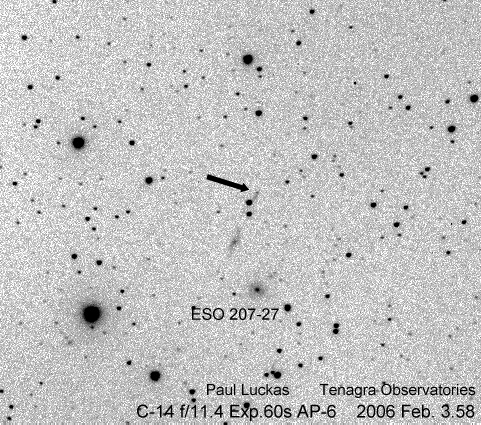

Our first discovery for 2006. Happy New Year SN2006y !
(click on image for larger version)

Circular No. 8668 Central Bureau for Astronomical Telegrams INTERNATIONAL ASTRONOMICAL UNION Mailstop 18, Smithsonian Astrophysical Observatory, Cambridge, MA 02138, U.S.A. IAUSUBS@CFA.HARVARD.EDU or FAX 617-495-7231 (subscriptions) CBAT@CFA.HARVARD.EDU (science) URL http://cfa-www.harvard.edu/iau/cbat.html ISSN 0081-0304 Phone 617-495-7440/7244/7444 (for emergency use only)
SUPERNOVAE 2006Y AND 2006Z Two apparent supernovae have been reported: 2006Y by P. Luckas, O. Trondal, and M. Schwartz (cf. IAUC 8655; unfiltered CCD frames, 0.35-m Tenagra telescope at Perth) and 2006Z by the SDSS collaboration (found in spectra; communicated by M. SubbaRao, University of Chicago and Adler Planetarium; cf. IAUC 8513; r-band magnitude given below). SN2006 UT R.A. (2000.0) Decl. Mag. Offset 2006Y Feb. 3.58 7 13 17.19 -51 41 18.8 17.7 1".7 W, 5".2 N 2006Z Feb. 1.51 13 44 58.07 +26 18 25.7 20.4 -- Additional unfiltered magnitudes of 2006Y: Jan. 27.59 UT, [18.5; Feb. 7.60, 17.3. SN 2006Z, which appears to be a type-Ia supernova with an age of approximately -7 +/- 4 days after maximum light, is coincident with the center of the host galaxy (r = 17.0 from an image taken on 2004 June 12; z = 0.1232).
SUPERNOVAE 2006Y AND 2006ai
N. Morrell and G. Folatelli, on behalf of the Carnegie Supernova Project, report that spectroscopy (range 380-930 nm) of SN 2006Y (cf. IAUC 8668), obtained on Feb. 27.14 UT with the Las Campanas 2.5-m du Pont telescope (+ WFCCD spectrograph), showing it to be a type-II event, nearly one month after explosion. A spectrum of the apparent nucleus of the host galaxy was also obtained, from which is derived a recession velocity of 10074 km/s (redshift 0.0336 +/- 0.0001). From nebular emission lines superimposed on the supernova spectrum, a slightly different redshift of 0.0333 +/- 0.0001 is derived; using this value, an expansion velocity of 7650 km/s for this supernova is derived from the minimum of the H_beta absorption. A redshift of 0.0341 +/- 0.0002 was also measured for ESO 207-G27 (a galaxy located southeast of the supernova host). A spectrum of SN 2006ai (cf. IAUC 8674), obtained on Mar. 5.12 with the same instrumental configuration, shows it to be a type-II supernova, at least one month after explosion, for which an expansion velocity of 8050 km/s is derived from the minimum of the H_beta absorption, considering a redshift of 7426 km/s (z = 0.0158 +/- 0.0001) measured from emission lines in the spectrum of the host galaxy.